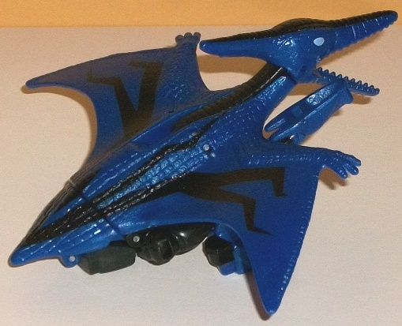
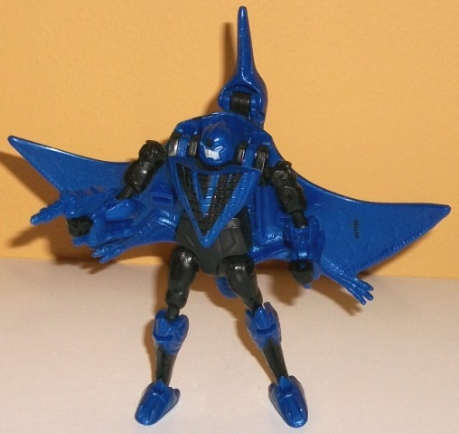

Price : $15 (U.S.)
(NOTE: Because this set is composed of repaints,
this is not a full-blown review. This mainly covers any changes made to
the set and the color scheme, and merely compares it to the original versions
of these molds. For a review on the original Legends RotF Bumblebee, go
here
.
For a review on Beast Wars Terrorsaur-- the mold used for Strafe-- go
here
.)
 Bumblebee
Bumblebee
Size
: Legion
Difficulty of Transformation
: Very
Easy
Color Scheme
: Moderately dull yellow,
black, and some light sky blue and off-white
Individual Rating
: 7.7
This release of Bumblebee is the exact same
as the individually packed (and also Wal-Mart exclusive) legion version
for AoE. See
this review
for a run-down.
 Strafe
Strafe


Size
: Scout
Difficulty of Transformation
: Very
Easy
Color Scheme
: Dark blue, black,
and some light sky blue and pale light gray
Individual Rating
: 4.9
This is another one of
those out-of-nowhere exclusives that shows up a couple of times each movie
line for exclusives. Wowzers, the Beast Wars Terrorsaur mold-- that first
came out 21 years before this release and hadn't been used in about 10
years? Talk about a blast from the past. Strafe takes the same basic color
scheme from his AoE toys, with a dark blue and black being the main colors.
It's mostly a straightforward two-toned color scheme, though in beast mode
the nice angular stripes on the wings help connect him to the other Strafe
toys and make him a bit more unique than just a blue pterodactyl. That
said, the blue is a bit too dark to really contrast against the black all
that well and not at all metallic, and there isn't any silver fade or lighter
metallic blue shades to really spice up the color scheme-- as such, beast
mode patterns aside, he's honestly got a rather boring, overly dark color
scheme. The eyes look nice, being a light blue coloration, and his robot
face is a light gray that helps give Strafe at least a little light coloration.
I really wish a bit more of these colors-- the blue in particular-- had
been used in either mode.
No mold changes have
been made to this version of Strafe.
This Scout/Legion 2-pack
is definitely the weakest of the exclusive assortment. For one, it's a
Bumblebee mold that's been re-used a bazillion times in a color scheme
that's just barely different from most of his previous schemes, and is
identical to the solo-released Wal-Mart exclusive version. Secondly, although
it's rather cool to see such a toy as old as the Terrorsaur mold back in
circulation, it wasn't that great of a mold even for its time in anything
but articulation, and 20+ years later it's even weaker. Add to that his
rather boring color scheme outside of the angular wing patterns, and I'd
definitely recommend getting the
deluxe
over
this version if you want an articulated version of Strafe. The only audience
I would recommend this 2-pack to are those that want a figure of Strafe,
but can't stand the idea of a two-headed pterodactyl and want a more "realistic"
alt mode for the movie character. Otherwise, this pack is an easy skip.
Review by Beastbot